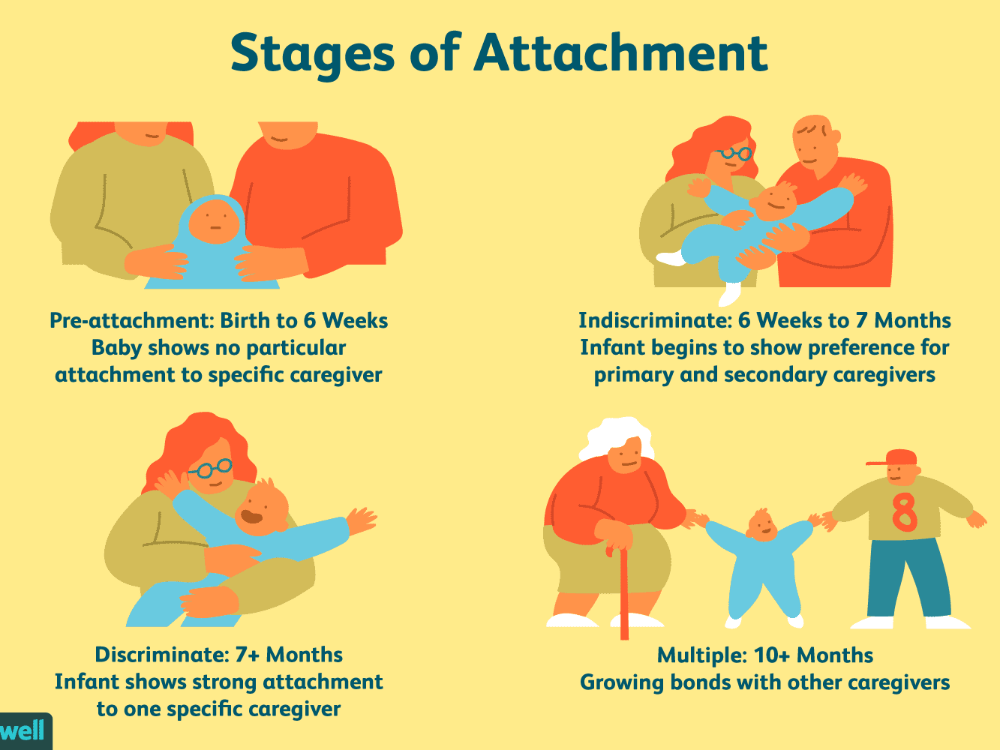
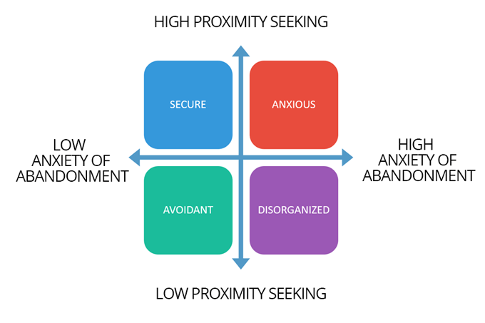

TEORIA ATAȘAMENTULUI
Teoria atașamentului este un model psihologic care explică parțial dinamica relațiilor dintre oameni. Atașamentul se referă la un tipar de relaționare de lungă durată pe care o persoană o stabilește cu o altă persoană apropiată. Este în special utilă pentru a înțelege cum reacționăm atunci când ne simțim răniți sau criticați, ori când se interpune distanța într-o relație apropiată. Stilul de atașament se formează în primii doi ani de viață și rămâne constant de-al lungul timpului dacă nu se intervine conștient asupra lui.
Stilul de atașament SIGUR - manifestat de cei care au avut un îngrijitor disponibil în primii doi ani din viață.
Stilul de atașament ANXIOS (preocupat/ ambivalent) - manifestat de cei care au avut un îngrijitor disponibil inconsistent sau un îngrijitor care a trăit anxietate în prezența copilului.
Stilul de atașament EVITANT - manifestat de cei care au avut un îngrijitor indisponibil.
Stilul de atașament DEZORGANIZAT - manifestat de cei care au trăit un paradox biologic - figura de atașament reprezintă pentru ei cea mai bună șansă de supraviețuire, dar și o foarte mare amenințare.
 